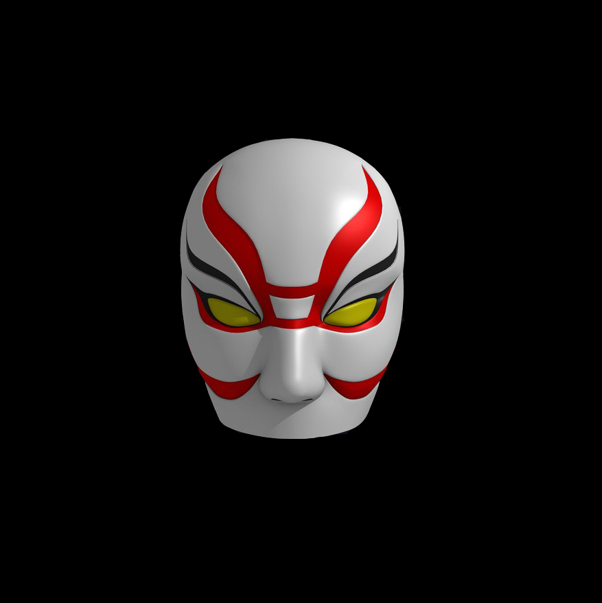
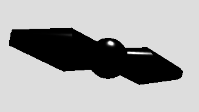
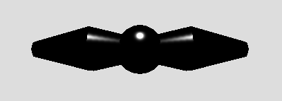
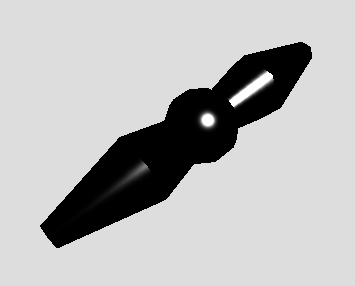
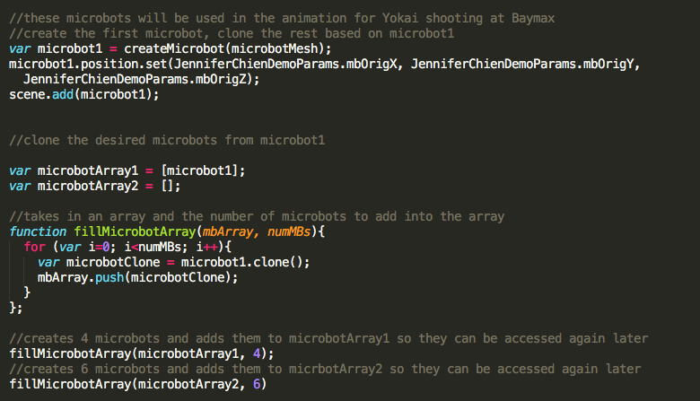
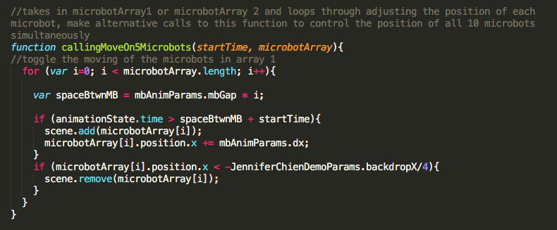
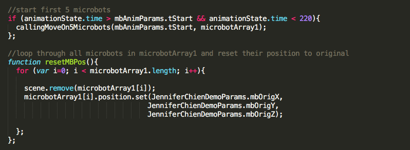
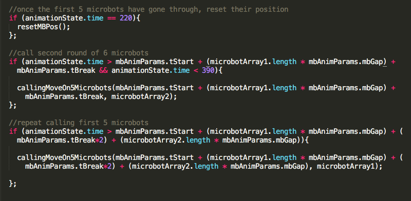

By Jennifer Chien, Class of 2019
Computer Science 307 - Computer Graphics (Scott Anderson)
Wellesley College, Fall 2016
Press "g" on your keyboard to start the animation! Press the "Space-bar" to stop.
You can also hover over the scene to see the microbots hover, ready for action!
Baymax was created out of a modified TubeRadialGeometry (geometry originally created by Katherine Kjeer). The fingers were created using a sphereGeometry for the fingertips and a torusGeometry for the length of the finger. In these four images, you can see that baymax is covered in a MeshPhongMaterial and that the spotlight is hitting baymax from various angles to emphasize his curves and how the light bounces off of him. In addition, the body of baymax was created by overlapping two TubeRadialGeometries over each other, which is why the way the light land on the body is slightly distorted around the waist. The eyes and nose-bridge are created in lambert material because they are not intended to reflect any light (or contain any shines).
This version of Yokai (the evil villain character in Big Hero Six) is a more abstract version, very similar to the shape of No-Face from Spirited Away. He was created out of the same modified (parameterized) TubeRadialGeometry by Katerine Kjeer. His facemask was created by texture mapping an image of the face on to a scaled sphere. The tricky part was having the image of the mask within the right proportion to the entire image so that it would map onto the desired part of the sphereGeometry. The actual image of the mask that is mapped onto the sphere is the image on the left.
So, as you can see, the actual mask does not take up more than about 1/9th of the image. This is how we were able to show most of the mask on the outward-facing part of the sphere.




The microbots were created using a simple sphereGeometry for the center. On the right side, two cylinderGeometries were attached to each other. For the left side, I cloned the right side and rotated it about the center to the left side. One of the biggest struggles with the microbots was getting the texture to look just right. I started with a MeshPhongMaterial, but I was setting up the details wrong for the phongMaterial, so the javascript was just being ignored. The result was that I was getting light reflecting off of the microbot but the specularity was not changing at all. Lesson learned: when in doubt, look back at the documentation once again!
One of the problems I ran into with the animation was that the microbots would stray so far away from their original position that they pass through the back wall and into the background. This does not obey the standard laws of physics!! This would mess with the way the viewer interacts, views, and understand the elements in the scene! Thus, I had to find a way to keep the hovering action but keep the microbots from straying too far. I did this by storing the microbots' original positions in an array and (using row major order), every couple of animation steps (during the animation), the microbots get reset to their original position.
   
The biggest hurdle in creating the animation for this project was trying to keep it as modular as possible. Originally, I had a ton of lines of code creating and uniquely naming each microbots (1-11) and storing them in the arrays "microbotArray1" and "microbotArray2". Later, I realized that one does not need the unique names for the microbots as long as the microbots are in the array because they can be accessed through the array.
In addition, I was able to create the function fillMicrobotArray() to fill the array with the desired number of microbots. The way the animation works (later on in the code) is just by looping through every element in the microbot array, not specific to the number of microbots, so the parameterization of the number of microbots to filled into the arrays was just a bit of icing on top of the cake in case I wanted to adjust the animation later or reuse this code (and add more scenes from Big Hero Six).
As we get to the callingMoveOn5Microbots() function, the function takes in two parameters: startTime and a microbotArray. This piece of code is one I am most proud of and I spent a lot of time just thinking about how to construct it. Basically, it loops through each microbot in the array and adds it to the scene, spaced apart by the time mbGap. In addition, each microbot already in the scene is moved to the left (mimicking the shooting motion towards Baymax). After each of the microbots has reached a specified x position (within Baymax), they are removed from the scene. The reason we need to take in the startTime as a parameter is that this function is called three times in each of the bursts of shootings. If we did not embed the start time into the if statement, then all three bursts of shootings would start simultaneously.
Note: The callingMoveOn5Microbots() function does not explicitly only move 5 microbots. When I was originally writing this code, each of the bursts of microbots shooting at Baymax had 5 microbots (this, thanks to the earlier implementation of arrays could be adjusted to accomodate as many microbots as desired), however I never changed the name of this function. In actuality, the first and 3rd burst of shootings have 5 microbots; the second burst of shooting at Baymax has 6 microbots.
The resetMBPos() function can be easily tweaked to take in the array of microbots is resetting. For this animations purposes, it only needs to reset the position of the microbots in microbotArray1. This function is called once, at animationState.time 220 after the first burst of shooting has occured. If I had not included the if statement, the reset function would have been called with each updateState() call, effectively repositioning the microbots everytime we called the animationFrame.
The last couple of if statements are just the same as the first, only differeing in the time at which the burst starts.
In terms of the work I did with transparency, I had to create the back grey wall so it had cutouts for the windows so the windows could act as see-through objects in the scene. In addition, the windows toggle between yellow (how they actually look in the movie) and blue (how they look by default).
Overall, I am really proud with out this project turned out. It really comes together as a short but sweet action scene that I could see myself working on more in the future (time allowing). I wanted to say a HUGE thank you to Scott Anderson for offering this class at Wellesley, I really enjoyed learning about how graphics and animation work, especially with the applications in movie production (pixar shorts, etc). I also wanted to say thank you to Jasmine Davis, the SI and Helproom tutor for this course. Without you I would not have made it through any of this and would not have learned to love graphics as much as I have. From the basic concepts to the little bugs, your humor and presence was always helpful. Thank you.
{kind=link}